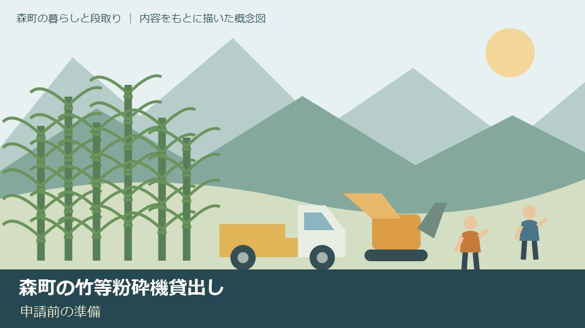
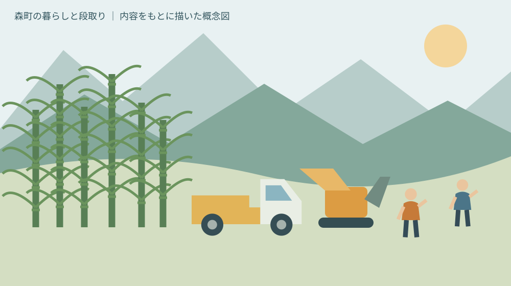
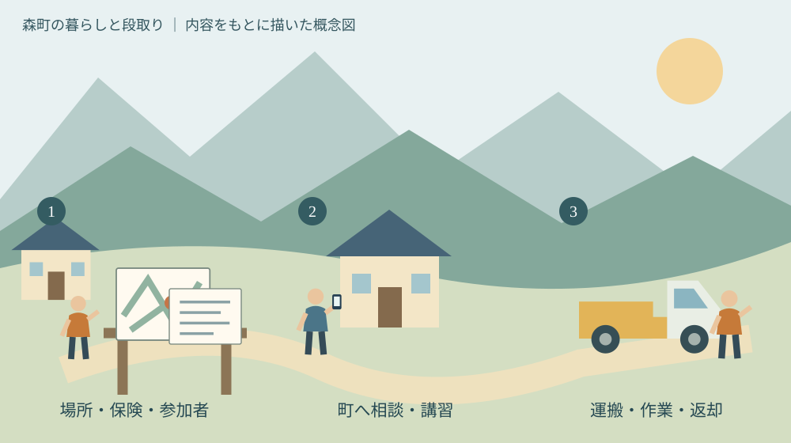

森町の竹等粉砕機貸出し｜申請前の準備
／ 農地・山林・茶畑

Q. 誰でも借りられますか
A. 森町の竹等粉砕機は、町内の非営利の竹林・森林整備が対象です。初回は操作講習を受け、貸出1週間前までに位置図・保険書類・参加者名簿などを提出します。貸出は原則7日以内。2名以上の作業体制と運搬車両を確保し、まず町の林政係へ相談してください。
竹林を守る人の手間から、借りる順番を考える
森町で竹林を管理してきた方は、竹を切る日だけ働いているわけではありません。道を開け、隣の土地への張り出しを見て、切った竹の置き場を考えています。家族や地域の仲間が休みを合わせる手間もあります。機械の貸出しを考えるとき、私はその準備を先に数えたいと思います。
大石浩之（磐田市／不動産業）です。この記事は、森町の竹等粉砕機を借りたい持ち主や団体向けです。機械の性能比較ではなく、申請前に誰が何をそろえるかを整理します。2026年10月8日に森町公式の貸出案内を確認しました。
機械が借りられることと、安全に作業を回せることは別です。町が用意するのは粉砕機であり、運搬する人や作業場所まで自動的に整うわけではありません。まず予定地と参加者を書き出す。その小さな準備が、借りられるかを相談する入口になります。
竹の処理と草の処理を一緒に考える場合は、実家の草刈りと搬出の段取りも参照できます。この記事では竹林整備の貸出条件を扱います。家庭の庭掃除や事業としての作業に、そのまま同じ条件を当てはめないでください。
公式条件｜2026年9月15日開始、町内の非営利作業が対象
森町「竹等粉砕機の貸出しについて」は、2026年9月15日からの貸出開始を告知しています。公式ページの更新日も同日です。町内の放置竹林の拡大抑制と、森林の整備・保全が導入目的です。掲載されている機種は共立KCM124Sです。
貸出対象の前提は、町内で営利を目的とせず、竹林の拡大抑制や森林の整備・保全に役立つ作業を行うことです。町内に竹林や森林を所有する個人・団体が対象に含まれます。町内会や部農会などは、町内に活動拠点があり、代表者を定めていることが示されています。
対象者には、町が公益上必要と認める場合の区分もあります。ただし、この区分を理由に、どの作業でも借りられると読むことはできません。持ち主と作業する人が異なる場合や、費用を受け取る作業が含まれる場合は、内容を説明して町に確認する必要があります。
貸出期間は、貸出日から数えて7日以内です。町が特に必要と認め、他の貸出しに支障がない場合には変更できる旨もあります。例外があることと延長が約束されることは違います。日程は原則の期間内で考え、足りない事情は申請前に伝えるのが確実です。
意外に見落としやすいのは、貸出無料でも、受け取ったその日に誰でも使い始められる制度ではない点です。町は初回利用者の操作講習を案内しています。申請書類は貸出1週間前までの提出です。休日の予定を先に固めると、講習や書類の準備が間に合わないことがあります。
申請書類｜場所・参加者・保険・承諾をそろえる
森町の申請案内では、竹等粉砕機貸出申請書兼誓約書に加え、作業実施箇所の位置図を求めています。位置図は、参加者だけが分かる呼び名で済ませず、町の担当者が場所を確認できる資料として準備します。どの範囲を作業するのかも、説明できるようにしておきます。
必要書類には、作業中の事故を補償する保険への加入を証する書類の写しがあります。保険に入っているという記憶だけで、今回の作業が対象になるとは限りません。私は、保険の名称と契約内容を手元に置き、粉砕機を使う共同作業が対象かを保険会社などへ聞く順番を勧めます。
作業参加者名簿も提出書類です。私は、声をかけた人と参加が確定した人を分けて記録すると考えます。名簿を整える段階で、当日の人数、欠席時の連絡先、機械を運べる人を把握できます。参加者が変わった場合の手続きは、町に確認してください。
作業地の所有者又は管理者の承諾を証する書類も必要です。申請者自身がその土地の所有者又は管理者である場合は除外されます。家族の土地だから書類は不要だろう、と先回りしないでください。申請者と所有者・管理者の関係を整理してから、必要な書類を判断します。
位置や境界に不安があるときは、畑と山の境界を資料で確かめる方法が別の確認材料になります。粉砕機の貸出許可は、隣地へ立ち入る承諾や境界の確定を意味しません。迷う範囲は作業予定から外し、関係者の確認を先に取るのが私の提案です。

借用の電話から返却まで、空いている日を埋める
森町の手続案内は、まず林政係へ電話して借用の意向を伝える順番です。電話番号は0538-85-6317です。初めて借りる方は、所要30〜60分程度とされる操作講習会を受講します。日時や受講者の扱いは、電話で具体的に相談してください。
講習の後に必要書類をそろえる場合も、貸出1週間前までという提出期限を外さないようにします。私は、希望日を一つだけでなく、変更できる候補日も手元に用意したいと考えます。予約の空き状況は今回確認していません。希望日を書いたことを予約成立と考えないでください。
受取りのための来庁と、返却のための移動も予定に含めます。町は、軽トラックなどの運搬車両を利用者側で用意するよう案内しています。車を借りられるかだけでなく、積み下ろしや固定の方法、運搬条件を講習や借用相談の際に確認する必要があります。
返却時は燃料を補給し、実績報告書を提出する流れです。私は、作業終了の時刻を返却直前に設定しない方がよいと考えます。片付け、機械の状態確認、燃料補給、移動にかかる時間があるためです。返却日時は町の指示に従い、余裕を持たせます。
町は、安全のため粉砕作業を2名以上で行うことと、取扱説明書を読むことを明記しています。本記事は操作方法の代わりにはなりません。機械への投入方法や対応できる材料を自己判断せず、説明書と講習で確認する。それを参加者にも共有してから作業を始めます。
良い点｜購入以外の選択肢と、事前確認の入口がある
森町の竹等粉砕機貸出しは、機械を購入しなくても整備に取り組める入口です。私は、小規模な竹林のために機械を保有するか迷っている方にとって、借用を検討できることを評価します。保管場所や購入後の維持管理を考える前に、作業の必要性を具体化できます。
対象に個人だけでなく代表者のいる団体も含まれる点も、私は良い仕組みだと考えます。家族だけでは人数をそろえにくい場合、地域の共同作業として相談する余地があります。誰かの善意を当てにするだけでなく、代表者と参加者を決める形にできるからです。
保険書類や位置図を求めることは、申請者には手間です。一方、私はその手間に意味があると思います。予定地、参加する人、事故への備えを、借りる前に一度並べられます。作業当日に初めて条件が分かるよりも、準備の段階で不足を見つけやすくなります。
森町「森町森林整備計画について（変更）」も、森林所有者などが行う整備の指針を公表しています。粉砕機の貸出しは、その広い森林管理を支える一つの道具として読むと位置づけが分かります。私は、機械を一度使うことより、次の管理へつなげることに価値を感じます。
注文したい点｜無料でも、運搬と人の負担は残る
森町の貸出案内は、貸出費用がかからない一方、運搬や燃料などの稼働経費は自己負担としています。私は、無料という言葉だけが先に届かない案内を望みます。車を用意する人、受取りに行く人、作業する人の負担が、特定の家族へ偏る可能性があるためです。
私からの提案は、現金の支出と人の時間を分けたメモを作ることです。燃料、運搬車両、保険の確認にかかる支出を書き、その横に講習、受取り、作業、返却の担当者を書きます。ここで総額を仮定して示すことはしません。条件によって実費は変わります。
雨や人の欠席で作業が変わったときの扱いも、先に分かると助かります。私は、予約変更や機械の不具合が起きた場合の連絡方法を、借用時に確認したいと考えます。困ってから代表者一人が調べ直す負担を減らせるからです。変更できる条件は町の判断を仰ぎます。
機械で処理できる量と、竹林が今後も管理しやすくなるかは同じではありません。私は、この貸出しだけで管理問題が解決するとは考えていません。切る範囲、処理後の置き方、翌回の確認を誰が担うかが残ります。今日の準備では、まず作業予定地の一画だけを地図に示してください。
対案・結論｜今日作るのは、作業場所と参加予定者の一枚
森町の竹等粉砕機を借りる準備は、作業地と参加予定者を書いた一枚から始められます。私なら、紙の上半分に場所と作業範囲、下半分に参加する人と役割を書きます。機械の予約が取れる前でも作れるため、日程が変わっても相談材料として残ります。
場所の欄には、分かる地番、進入路、車を止める候補地を記します。分からない箇所は空欄にし、推測で確定しません。現地へ行くために危険な斜面へ入る必要もありません。既存の地図や家族の資料から分かる範囲を集め、町への質問を作ります。
参加者の欄には、代表者、運搬担当、講習を受ける予定の人を書きます。町が求める受講の範囲は相談時に確認します。作業当日に2名以上を確保できないなら、日程や体制を見直す。その判断を、誰かが無理をして埋める前に共有したいと私は考えます。
保険の欄には、問い合わせ先と確認した日を記します。「対象になると思う」ではなく、どの作業内容を説明し、どの範囲が補償されると回答されたかを残します。条件が付くならその条件も記録します。申請書類として必要な写しの形は、町の案内に合わせます。
竹林と隣接する山の木も扱う予定なら、森町の伐採届を確認する順番も読んでください。粉砕機の借用と、伐採に関する届出の要否は別に確認する事項です。借りられるから切れる、と手続きを一つにまとめないことです。

家族に残す記録｜作業をした人だけが知っている状態を減らす
竹林整備の記録は、今回の実績報告だけでなく、次回の担当者にも役立ちます。私は、作業前後の写真、実際に作業した範囲、機械を運べた経路を一緒に保管したいと考えます。写真は周囲の土地や個人が必要以上に写らないよう配慮し、管理目的の範囲で共有します。
切らなかった場所にも記録の価値があります。境界が不明だった、足場を確かめられなかった、時間が足りなかった。理由が残れば、次の人が未実施部分を見て勝手に判断せずに済みます。作業の成否を、見た目がきれいになったかだけで測らないための記録です。
申請書の控えと参加者名簿は、必要な人が管理できる場所に置きます。個人の連絡先がある書類を、公開の回覧やSNSに載せる必要はありません。家族へは保存先と代表者の連絡方法を伝えます。所有者の資料は、売却を決めていなくても実家カルテで整理できます。
私は、竹を処理した後の見回り日も、仮で一つ置いておくと考えます。日にちは天候や体制に合わせて見直せます。次回が未定でも、誰に連絡すれば相談できるかが分かれば違います。地域の負担を軽くするには、作業量だけでなく引継ぎの手間にも目を向けたいのです。
大石の視点｜道具の前に、回せる段取りを確かめる
森町の竹林管理で私が重く見るのは、機械の有無よりも作業を回す段取りです。私は不動産業の立場から、場所、持ち主、進入路、役割を同じ紙に置いて考えます。これは今回の制度を読んだ私の意見であり、粉砕機を借りた体験談ではありません。借用前に、作業当日の誰か一人へ負担が集まらない形を探したいと思います。
正直に言えば、地域で共同作業を組む方が楽なのか、外部へ依頼する方が続けやすいのかは、この記事の情報だけでは決められません。距離、人数、運搬手段が家ごとに違うからです。だから私は、無料だから借りると即決する前に、足りない条件を一つだけ見つけることを勧めます。
借りるために無理な人数合わせをする必要はありません。必要条件がそろわなければ、別の日程や別の方法を相談する判断もあります。竹林を守ってきた方の努力を長持ちさせるために、作業場所と参加予定者を今日書き出す。今回の結論は、その具体的な一歩です。
よくある質問
この記事の条件と未確認事項を、質問ごとに整理します。手続きの前には出典の最新案内も確認してください。
誰でも借りられますか
誰でも借りられるわけではありません。町内で営利を目的とせず、竹林の拡大抑制や森林整備等の作業を行う対象者が条件です。町内の竹林・森林の所有者や、代表者を定めた町内の団体などが含まれます。作業内容と申請者の立場を整理し、林政係へ確認してください。初回講習と申請書類の準備も必要です。
無料なら費用はかかりませんか
貸出費用は無料ですが、町は運搬や燃料等の稼働経費を自己負担としています。運搬用の軽トラックなども利用者側で用意します。作業中の事故を補償する保険の加入書類も必要です。講習、受取り、返却にかかる時間を含め、家族や団体の担当と実費を申請前に確認してください。すべての費用が無料ではありません。
週末に1人で使えますか
町の案内は、粉砕作業を安全のため2名以上で行うよう求めています。1人での作業を前提に予定を組まないでください。初回は操作講習を受け、貸出1週間前までに申請書類を提出します。週末の空き状況、受取り・返却日時は町へ確認が必要です。参加者を確保できなければ、日程や作業方法を見直します。
出典・確認日
- 森町：竹等粉砕機の貸出しについて（2026年10月確認／確認日：2026-10-08）
- 森町：森町森林整備計画について（変更）（2026年10月確認／確認日：2026-10-08）
最終確認日：2026-10-08。制度・数値・受付条件は変わる場合があります。最新情報は発信主体へ確認してください。権利・登記・相続・農業技術や安全管理など、個別の判断は担当窓口や適切な専門家へご相談ください。